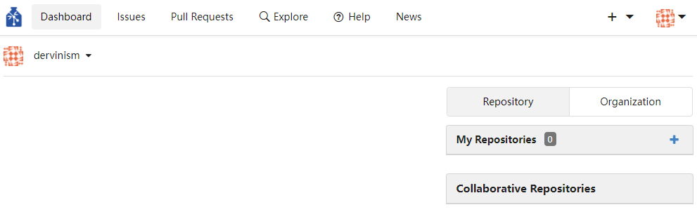
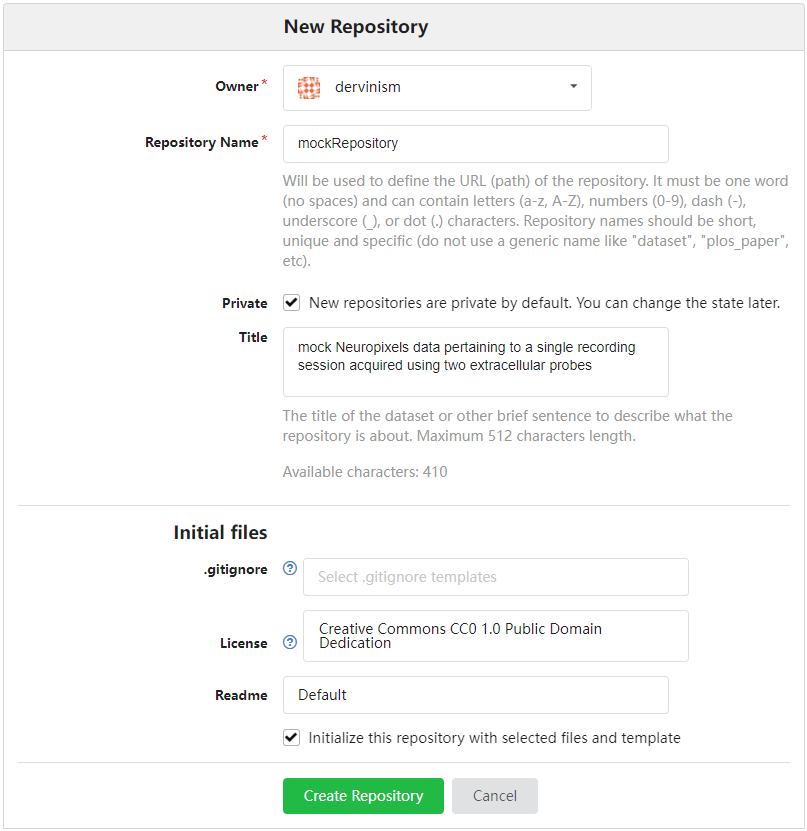
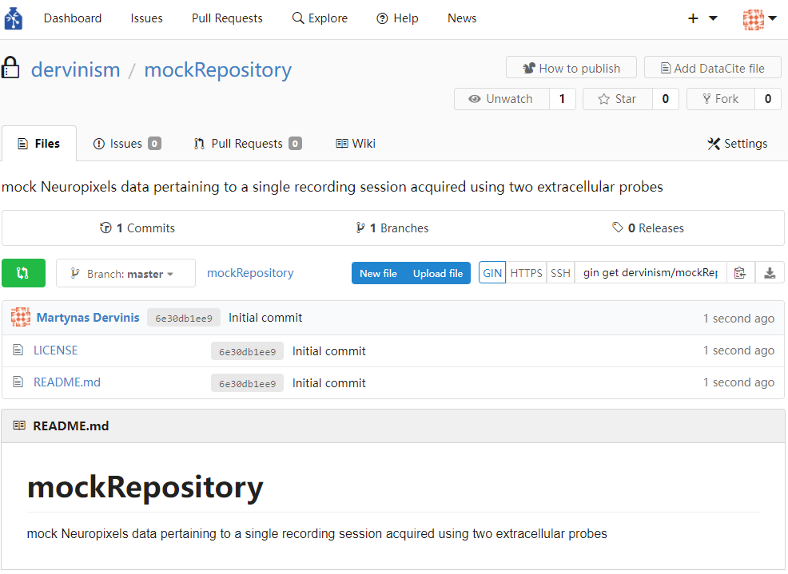
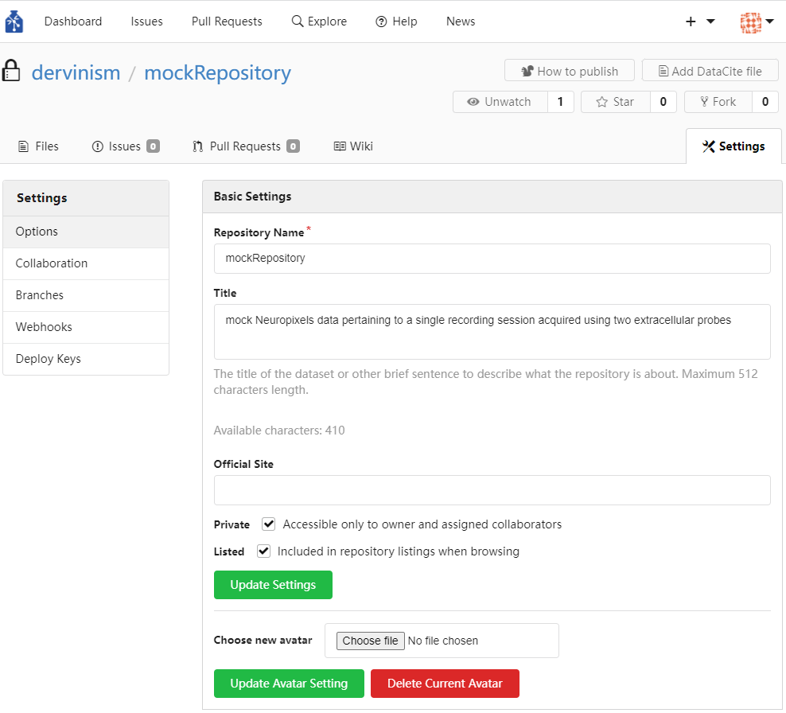
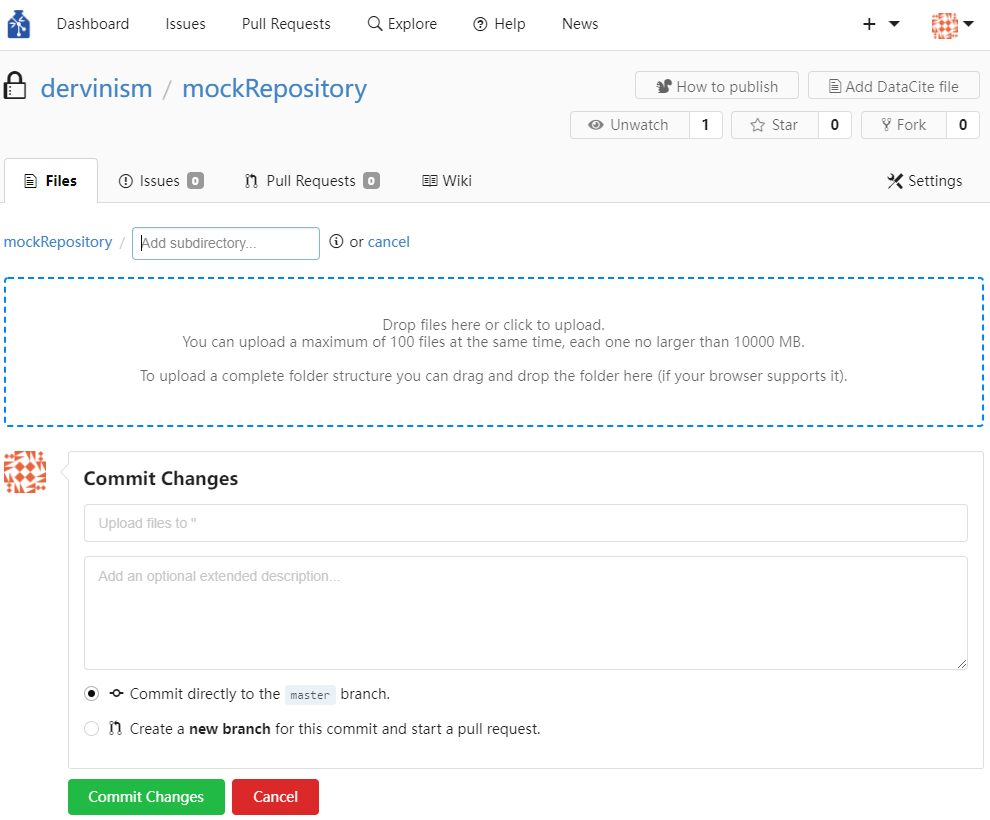
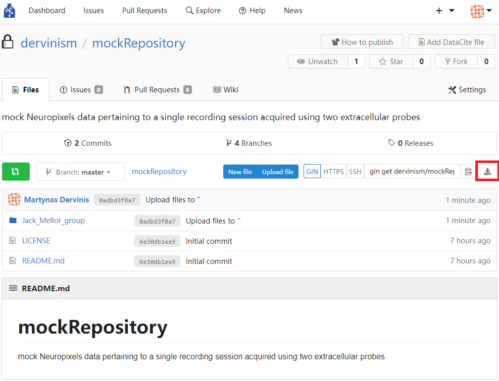
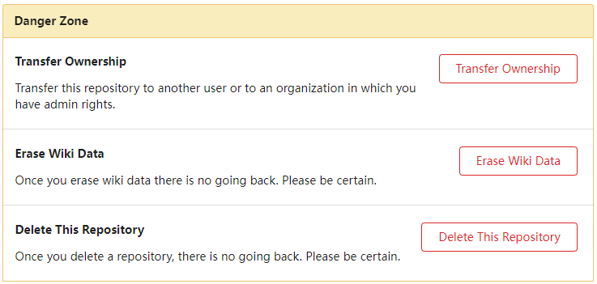
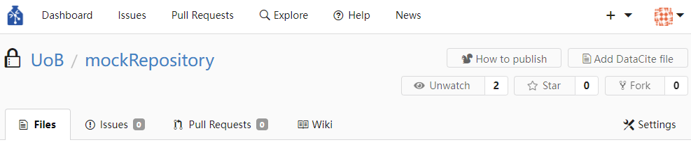
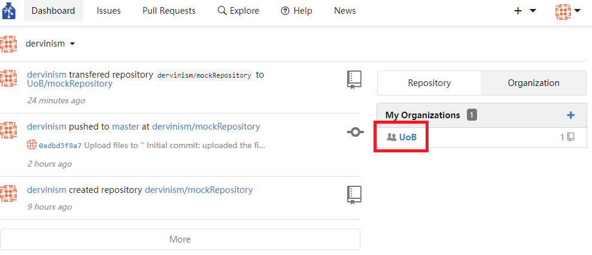
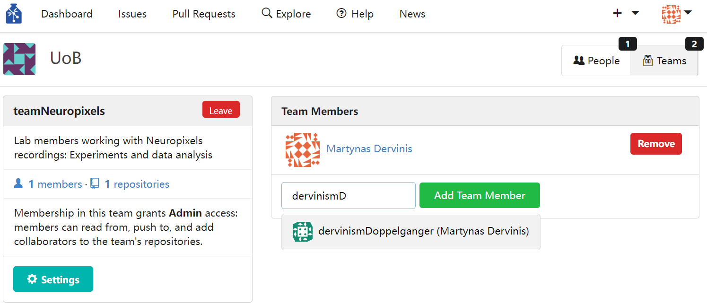

Bristol GIN via Graphical Interfaces#
Aims#
The aim of this tutorial is to give you an introduction to using the GIN web interface. For this tutorial you will need to download a mock repository.
In this tutorial you will learn how to:
Create a repository
Upload files to a repository
Download files from a repository onto your computer
Transfer repository ownership to your organisation
Create a collaborating team
Assign the repository to the team
Add members to the team
Create GIN Account#
For this tutorial you can either use our local Bristol GIN or the public GIN: the two work the same. We start by registering an account with the GIN. You just need to follow the instructions on the screen, confirm your email, and your account is set up (Figure 1).

Figure 1. Register your Account
Once the registration is done, you should have an account open as shown in the figure below.
{kind=link}
Figure 2. Fresh Account
Create Repository#
The next step is to create a repository.
{kind=link}
Figure 3. Create Repository
I am going to use mock Neuropixels data acquired during a single recording session using two silicon probes. Below is an example (Figure 3) showing how to enter basic data describing a repository. I am not going to enter anything in the gitignore entry but one can indicate which files and folders of the local instance of the repository should not be synchronised with the remote repository by providing a gitignore file.
By default the repository is private but it can be changed to public at any time (not yet true for Bristol GIN). You can also add collaborators at a later stage. Once the repository is created you should see the page below.
{kind=link}
Figure 4. Fresh Repository
Repository Settings#
Repository properties can be modified via the Settings pane (Figure 5). Figure below shows part of available settings. More advanced settings can be set up (revealed if you scroll down), as well as collaborators can be added to the repository who can be granted full or restricted access rights (Figure 6).
{kind=link}
Figure 5. Repository Settings
{kind=link}
Figure 6. Setting up Collaborations
Uplpoad Research Data Files#
When we have a repository created and settings adjusted, the next step is to upload research data files. I have created a simple folder structure containing mock data that I would typically generate during a single recording session using two Neuropixels probes and a pupil camera but which also include pre-processing data generated during spike sorting with Kilosort and Phy. The files can be uploaded using the blue ‘upload file’ button (Figure 4) which brings the ‘Commit changes’ page (Figure 7). The files can then be uploaded by clicking the area marked by the blue dashed line or by dragging files or folders to that area. Note that the web interface limits the ammount and the size of files that can be uploaded. The proper more efficient way to manage multiple and large files is to use the GIN command line tools which are covered in the next tutorial.
{kind=link}
Figure 7. File Upload Page
In my case I simply drag-and-drop the contents of the repository root folder. This mock research data folder contains the following structure:
mockRepository/mockExperiment/animal_ID/session1_2022-05-16/probe1 (all data pertaining to the recording probe 1)
mockRepository/mockExperiment/animal_ID/session1_2022-05-16/probe2 (all data pertaining to the recording probe 2)
mockRepository/mockExperiment/animal_ID/session1_2022-05-16 (data that is related to both recording probes like pupil video, for example).
I also add a commit message that succinctly describes the change that I am introducing to the repository.
{kind=link}
Figure 8. Commit Files to Repository
There are more than 100 files in this repository and so not all files could be uploaded at once. As we can see in the figure above, the very last files are crossed out to indicate that they cannot be uploaded. Therefore, we need to repeat this procedure with these remaining files making sure that the entire repository is fully uploaded.
Downlpoad Research Data Repositories and Files#
The repository now contains files which can be downloaded by your collaborators or by yourself, if you lose access to your local instance of the repository. Just press the download button indicated in Figure 9 to download the entire repository. Files larger than 10 megabytes will not be downloaded and only pointers will. Big files have to be downloaded individually. Alternatively, large files can be downloaded using GIN client or git-annex (command line tools). To download files individually, simply locate the file within the repository and click the Download button to the right of the file of interest (Figure 10). Similarly, you can delete a file by clicking the button with the bin symbol to the right of the Download button. If the file is a text file it can also be edited by pressing the button with the pen symbol. GIN allows creating new text files by pressing the blue New file button (Figure 9). If you give an .md (Markdown) extension to the text file, it will allow you to use rich text editing tools just like in Github. These text editing tools are particularly useful when creating README files. Markdown text editing tools were used to create this tutorial.
{kind=link}
Figure 9. Download Repository

Figure 10. Download Individual Files
Transfer Repository Ownership#
Non-text files can be modified by uploading a new version of the repository files. In this way the old files are not only being replaced by the new ones, but changes are being tracked and the entire history of repository modifications is being preserved. Furthermore, you can create new repositories, add another organisation and associate the repository with a particular organisation. When I created my account, I indicated my affiliation with the University of Bristol (UoB). Now I am going to transfer the ownership of this repository to UoB. In the repository settings (Figure 5) I scroll down to the very bottom of the page passing the Advanced Settings all the way down to the Danger Zone where I carry out the transfer of ownership (Figure 11).
{kind=link}
Figure 11. Danger Zone
Once the ownership transfer has been carried out, the repository name should become associated with the new owner: UoB (Figure 12).
{kind=link}
Figure 12. Transferring Repository Ownership
Warning
If you are transfering the ownership of your repository to an organisation, make sure that you have admin rights in that organisation. Even if you think this is the case, it is worth double-checking this. You may have given a name to your organisation that has already been taken and you may end up not having such rights. In such a scenario you may end up inadvertently losing access to your own repository. Be extremely careful in the Danger Zone!
Create Teams#
If you go to the Dashboard of your account (see the top left corner of the Figure 12), you can view activity that is associated with your account. There you can also see teams and organisations associated with the repositories you work with. If you click on the organisation that is associated with one of your repositories (Figure 13), you will be taken to the organisation’s page (Figure 14) where you can create new teams of users. Figure 15 shows an example of creating a team that works with Neuropixels recordings: carrying out experiments using Neuropixels probes and writing code to analyse data generated using these probes. As one of the final steps, you associate the team with a repository which would give anyone within that team elevated rights to manipulate the repository as indicated in the Figure 16. If you press the blue Join button, you become a member of this team.
{kind=link}
Figure 13. Finding your Organisation in Dashboard
{kind=link}
Figure 14. Organisation Page
{kind=link}
Figure 15. Create Team
{kind=link}
Figure 16. Assign Repository to Team
Add Team Members#
The team that you have created currently has no members. By pressing the blue Join button Figure 16, you can be the first member to join the team. You can also invite other members of your lab or external collaborators to join the team. If you press on the blue members text, you will be prompted to add new team members (Figure 17). Choose another member of your lab to add as a collaborating team member. The new team member will have access and elevated rights to control the repository.
{kind=link}
Figure 17. Add New Team Meambers
Any issues relating to a particular repository can be reported under the Issues tab in the repository page (Figures 4, 9, and 12). Any requests to make changes to the repository can be approved under the Pull Requests tab (Figures 4, 9, and 12). A more extended description of how to use the GIN server web interface is available at the GIN web interface guide. There is also a Windows GIN client available that functions as a GIN GUI for Windows systems. An external WinGIN tutorial provides additional useful guidance if you are interested in using it.